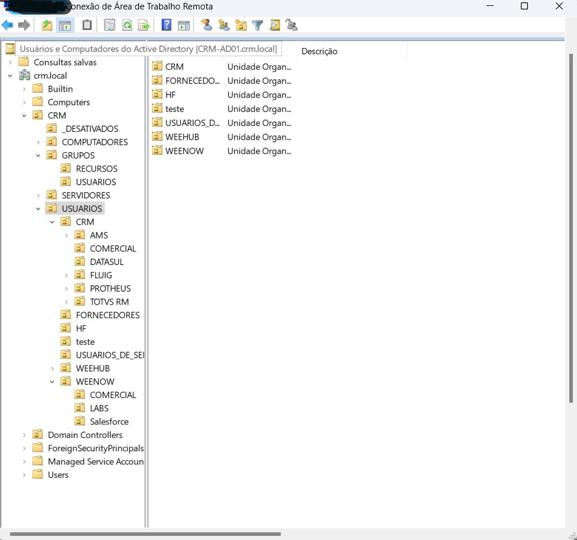
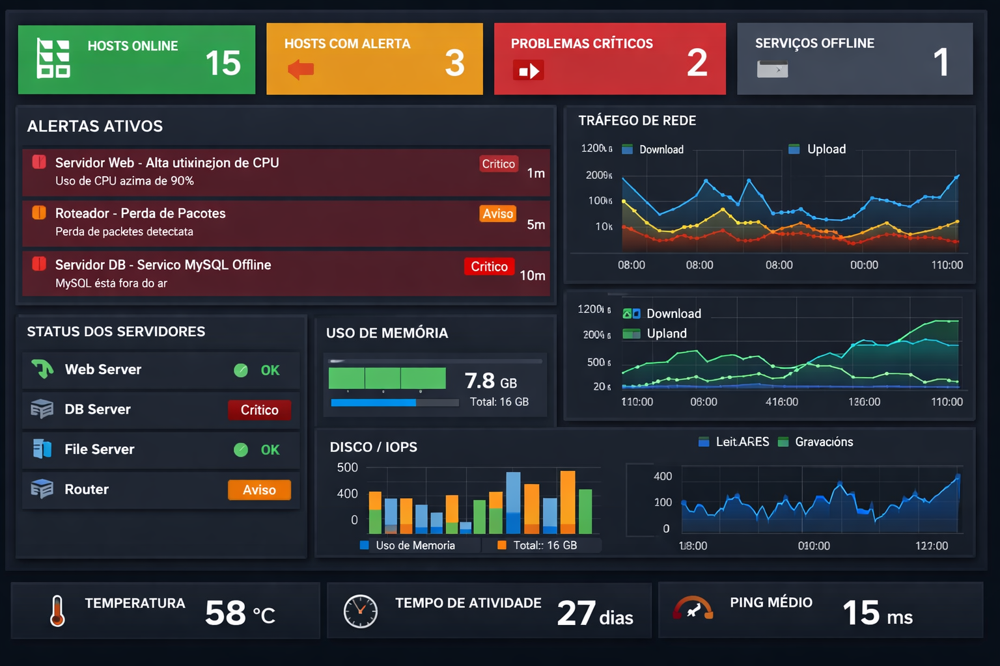
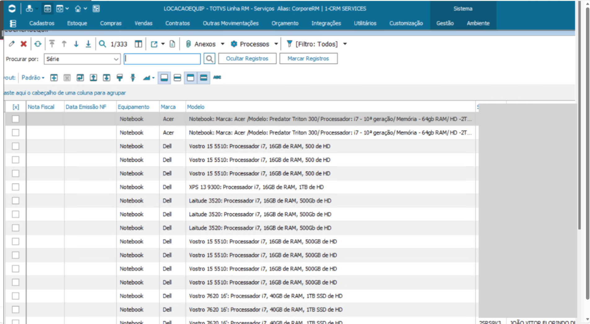
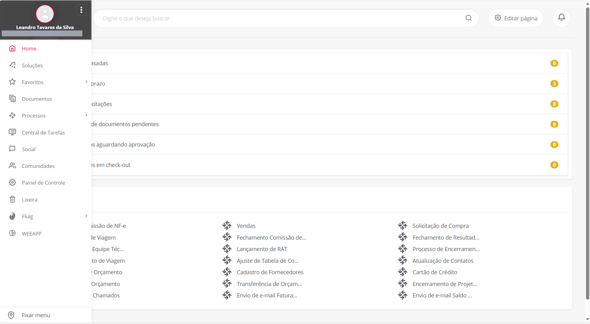
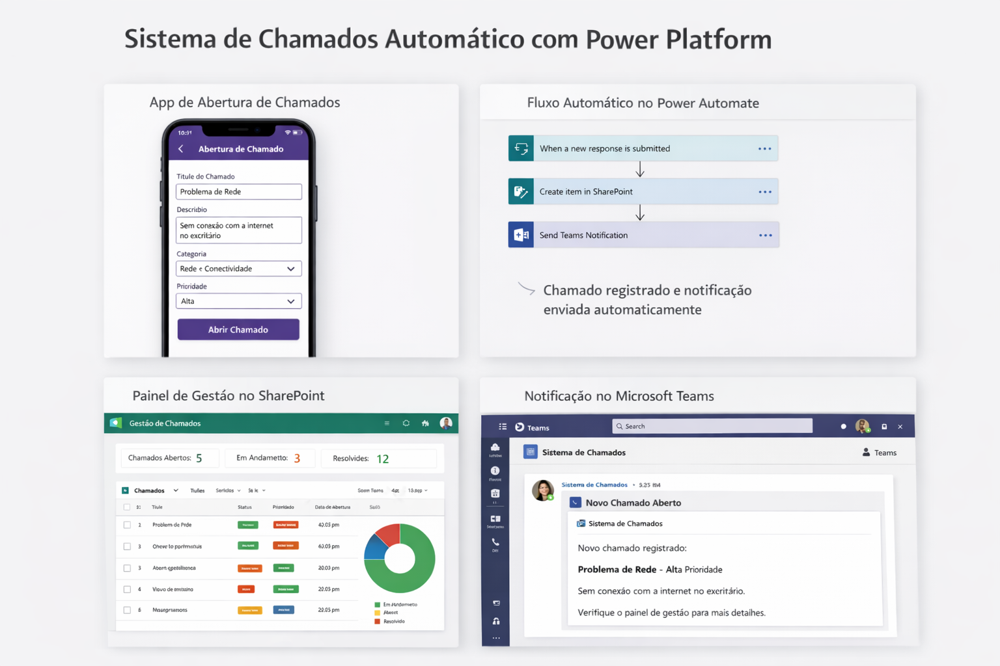
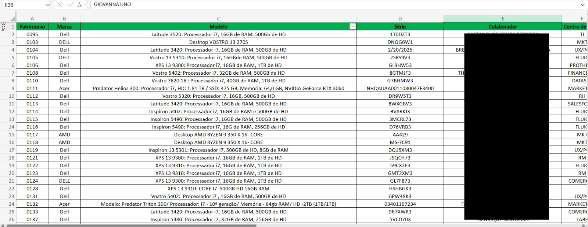

×
Fechar
💻 Projetos Suporte & Infraestrutura
Gestão de Usuários AD
PowerShell
Active Directory
LDAP

- Criação de usuários no AD
- Modificação de atributos de usuários
- Exclusão de usuários
- Automação de grupos e permissões
- Exportação e relatórios de usuários
Monitoramento Zabbix
Zabbix
SNMP
Linux

- Criação de dashboards interativos no Zabbix
- Automação de notificações de incidentes
- Configuração de hosts e dispositivos monitorados
- Otimização do tempo de resposta a falhas
Automação TOTVS
TOTVS RM
Fluig
Excel


- Inventário de máquinas e equipamentos
- Padronização de dados de TI
- Integração com Excel para análise
- Registro de usuários e perfis de acesso
- Automação de processos com TOTVS Fluig
Plataformas No Code
Power Platform
Power Automate

- Abertura de chamados de TI
- Classificação por prioridade
- Notificações automáticas por e-mail
- Dashboard de acompanhamento
Gestão Integrada de Ativos e Acessos
Excel
Office 365
PowerShell


- Inventário completo de 25+ equipamentos (patrimônio, especificações)
- Controle de usuários e licenças Office 365
- Mapeamento de equipamentos por departamento (MKT, RH, FLUI, etc.)
- Gestão de usuários ativos/inativos para otimização de licenças
- Padronização de dados para integração com Active Directory
- Relatórios dinâmicos com Excel avançado